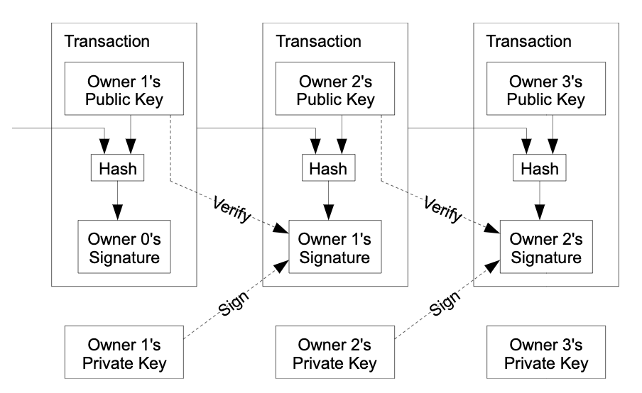

比特币白皮书翻译
比特币——一个点对点的电子现金系统
Satoshi Nakamoto
satoshin@gmx.com
www.bitcoin.org
摘要
本文提出了一个纯粹点对点版本的电子现金系统，实现了在无需经过第三方金融机构的情形下，从交易的一方直接支付到另一方的线上交易方式。数字签名技术为该系统的提供了部分解决方案，但如果交易依旧需要信任一个第三方来防止双重支付的话，所需的主要优势还是缺失的。我们提出了一个在点对点网络中解决双重支付问题的方案。该网络通过哈希的方式来为交易添加时间戳，并将时间戳处理后的交易添加到一条不断发展的基于哈希函数的工作量证明机制的链上，这样就创建了一个除非重新进行工作量证明的运算，否则无法被更改的交易账本。最长链将不仅是见证交易事件顺序的证明，同时说明该链是集合了最多CPU算力工作的成果。只要大多数CPU算力是被无意于联合起来攻击网络的节点所拥有，这些算力将会不断发展最长的链，进而领先于攻击者。该网络自身仅需要最简化的结构体系。信息是基于最大的努力在网络中进行广播的，节点可以随时退出和加入网络，退出后又加入网络的节点可以从拥有最长工作量证明的链上来获取他们不在网络中时所发生交易的记录。
1.介绍
网络上的贸易已经发展到了一个对金融机构作为可信第三方的绝对依赖来进行展电子支付的程度。尽管这样的系统目前来说对于大多数交易来说运行良好，但是因其固有的基于信任模型的弱点，而依旧存在着不足。因为金融机构不可避免的需要进行调节纠纷，完全不可逆的交易是不太可能实现的。调节纠纷的需求增加了交易成本，限制了交易的最小规模，也阻碍了小额零散交易的可能性，同时为那些不可逆的贸易服务提供不可逆交易能力的缺失所带来的损失也是巨大的。因为交易可逆性的存在，对于信任的需求就增加了。商家必须对他们的客户十分警惕，要求用户提供更多本来并不需要的信息。因为无法完全避免欺诈的发生，就要接受一定比例的欺诈行为存在。这些交易成本支出和不确定性可以通过使用实物现金来避免，但是要通过线上信息交流的渠道来创建一个不需可信第三方的交易，目前我们还没有可以来实现的机制。
我们需要的是一种建立在以加密技术的证明来代替信任背书的电子支付系统，使得任何有意向交易的双方可以直接进行价值的转移，而不是通过信任一个第三方机构来完成交易。在这样的支付系统中，计算机运算上不可逆改的交易记录，可以保护卖家免受欺诈，同时可以实施常规的托管机制来保护买家。本文中，我们提出了一种依托点对点的分布式时间戳服务系统，该系统通过计算机的运算工作来生成一份按时间顺序排列的交易记录的方式来解决双重花费问题。系统的安全性则是通过诚实的运算节点控制比任何攻击性竞争团体多的CPU算力来确保的。
2.交易
这里，我们将电子货币定义为一条数字签名链。每一个电子货币的拥有者通过该电子货币的前一笔交易和接受者的公钥一起哈希后的值进行数字签名，并将这个签名添加到电子货币链的最后，这样就将该电子货币支付给到了接受者。收款人可以通过验证签名来验证所有权。

这样的交易中存在的问题是收款人不能验证支付方有没有重复花费他所支付的货币。通常的解决方案是引入一个可信的中心权威机构或铸币机构，来检验每一笔交易是否进行了重复花费。
在铸币机构的模式中，对于每一笔交易，货币必须被发到铸币机构再发行新的货币，这样只有铸币机构发行的货币是可以确信没有被重复花费的。这种解决方案的问题在于，整个货币体系的运营是建立在对于运营铸币机构的实体的依靠上的，因为所有的交易必须通过他们，就像银行系统一样。
我们需要一个可以让收款人确认交易的支付方没有签署其他更早的交易的方法。这样，出于防止重复花费的目的，我们只认可最早的交易是有效的话，我们就不用在意后来的重复花费的尝试。而唯一可以确认一笔交易不存在的方法就是可以知道系统里所有的交易。在以铸币机构为模型的模式中，铸币机构是可以检查所有交易且可以决定哪一笔最先到达的。要在实现这个目标的同时又不需要去信任一个第三方，就需要系统内所有的交易都被公开展示[1]，并且公开的交易记录中的交易前后顺序是被所有的参与方都认可和接受的。这样，在每一笔交易中，收款人只需要确保网络中大多数的节点都认可他的这笔交易是最早被系统接收到的有效交易即可。
3.时间戳服务器
我们提出的方案始于一种时间戳服务器。时间戳服务器通过将包含了一组交易记录的区块进行来添加时间戳的哈希处理后广泛的发布到诸如报纸或新闻论坛这类公开平台中公示[2-5]。时间戳服务能证明那些被加入到区块中数据，在被哈希处理的那一时刻是必然存在的。在该时间戳服务系统中，每一个时间戳都会包含前一个时间戳的信息，这样就形成了一条每一个时间戳都强化了其前一个时间戳的链。
4.工作量证明
要以点对点的方式来实现一个分布式的时间戳服务器，我们需要一个和Adam Back的Hashcash相似的工作量证明系统[6]来替代报纸和新闻论坛的功能。工作量证明机制通过搜寻一个具体的值，使其在被哈希时（如使用SHA-256哈希函数进行哈希），得到的一个以一定数量0作为开头的哈希值。运算出具体数量的0开头的哈希值的平均工作量会是指数级别的，但其运算结果可以通过执行一个简单的哈希函数来进行验证。
对于我们的时间戳网络来说，工作量证明的机制是通过在区块中添加一个随机数，使得该随机数和区块的其他信息一起在被哈希后所得哈希值达到所需的0开头的位数来实现的。一旦一个CPU花费了算力来完成满足工作量证明要求的计算工作后，除非重新花费算力进行工作量证明的计算，否则区块将不能被更改。因为后续的区块是链接在其前一区块后面的，所以更改某一区块的工作还将包含去重新进行链接在该区块后的所有区块的工作量证明运算工作。
通过工作量证明机制，还实现了以多数参与者的决策结果作为决策结果（少数服从多数）的机制。如果“多数”是基于“一IP地址一票”来衡量的话，那么该少数服从多数的机制就会被任何可以囤积到很多IP地址的参与者所破坏。工作量证明实际上是“一CPU一票”。多数参与者的决策是有最长链代表的，而最长链代表了最多最强大的工作量证明运算资源投入到了该链上。如果大多数的CPU算力是由诚实的节点控制的，则诚实链将增长最快且超过其他竞争链的。如果要更改过去的区块，攻击者需要去重新进行所要更改区块及其后续所有区块的工作量证明运算工作，还要追赶并超过诚实节点所工作的链。我们将在稍后展示，随着后续区块的不断增加，处于落后链的攻击者追上来的概率将会呈指数级的减小。
为了补偿硬件计算速度的增加和运行节点的收益变化所带来的影响，进行工作量证明的难度会依据平均每小时的平均出块数的移动平均值来进行调整。如果出块速度过快，难度将会增加。
5.网络
运行比特币网络的步骤如下：
- 将新的交易广播到所有节点
- 每一个节点收集新的交易并打包到一个区块中
- 每一个节点为他们的区块进行工作量证明的运算
- 当一个节点完整一个工作量证明，它将把区块广播到其他节点
- 其他节点只有当该区块中的所有交易都是有效且还没有发送的时候才会接受该区块
- 其他节点通过使用该区块的哈希值当作其正在打包的下一区块的前序区块哈希值，并在该区块的基础上做创建下一个区块的运算来表示对该区块的接受。
节点总是将最长链当作正确的链，并在其上继续进行工作量证明的运算来不断发展这条链。如果两个节点同时广播了下一个区块的不同版本，其他的节点可能会先接收到其中的一个或另一个。在这种情况下，他们会在他们先接收到的那个区块上进行工作，但是会保存另一个分支以防其变得更长。当下一个工作量证明完成，而另一个分支变得更长后，原先的链上的工作将会中断；在较短分支上工作的节点则会切换到更长的链上继续工作。
一笔新的交易的广播不一定需要到达所有的节点。只要它们能被广播到多个节点中，他们很快就会被打包到一个区块中。区块广播可以容忍信息的丢失。如果一个节点没有收到某一个区块，当它在收到下一个区块时发现它遗漏了区块它会去向网络中的其他节点请求缺失的区块。
6.激励
按照规定，区块中的第一笔交易是一笔特殊交易，这一笔交易创造出了一定量新的货币给到这个区块的创建者。这个机制可以激励节点来参与并支持网络，并提供了一种在没有中心化权威机构发行货币的情况下的货币发行到流通的方式。稳定发行一定数量的新货币类似于黄金开采商消耗资源以增加黄金的流通量。在我们的情况中，则是CPU计算时间和电力资源的投入和消耗。
激励还可以来自于交易的手续费。如果交易的输出的金额比交易的输入的金额少，其中的差额就是交易手续费，手续费可以激励节点把相应的交易打包到区块中。一旦预先设定的数量的货币全部进入流通后，激励机制将转变为完全由交易费来驱动，到那时这就是一个完全没有通货膨胀的系统了。
这一激励机制可以在鼓励节点保持诚实方面起到帮助作用。如果一个贪婪的攻击者能够收集更多的CPU算力从而超过诚实节点，他将面临一个在利用它去欺骗别人来偷回自己的支出，还是利用它来挖取新的货币的选择。他应当会发现按照规则来继续参与游戏才是更有利可图的，因为按照游戏规则操作，系统可以提供比其他人加起来还要更多的货币来为他带来利益，而欺骗别人则会破坏系统和自己财富的有效性。
7.回收磁盘空间
当一个货币的最新一笔交易已经埋藏在足够多的区块中，之前花费它的交易记录是可以抛弃来节省磁盘空间的。要实现这个功能而不破坏区块哈希，交易都是在默克尔树中进行哈希处理的[7][2][5]，这样可以实现只包含默克尔根的哈希在区块哈希中。因此，旧的区块就可以通过修剪掉默克尔树的枝干来进行压缩，内部的交易哈希就不需要被保存了。
一个没有包含交易的区块头只有80个字节大小。如果我们预计区块大概每10分钟生成一个，每年的大小为80字节 *6 *24 *365=4.2MB。 2008年销售的常规电脑一般都拥有2GB的内存，摩尔定律的当前预计为每年1.2GB，因此就算将区块头存储在内存中，存储也不会是个问题。
8.简化支付验证
不运行一个完成节点而验证交易也是可行的。一个用户只需要保存一条最长链的区块头数据，他可以通过咨询网络上的节点来确保他拥有的是最长的链，并且获取到相应时间戳的区块中连接具体交易的默克尔树的枝干。这样的用户无法自己检验交易，但是通过连接到交易在区块中的位置，他可以看到网络上的节点已经接受了这笔交易，而且后续添加的区块进一步确认了网络也已经接受了这笔交易。
用这种方式，只要诚实节点控制着网络，交易的验证就是可靠的，但是如果攻击者的算力掌握了大多数算力，这种验证的有效性将是脆弱的。虽然网络节点可以通过自身验证交易时，但只要攻击者可以持续的在网络中维持算力优势，简化验证方法还是会被攻击者通过伪造交易所欺骗。一个可以保护这种问题的策略是接受网络探测到伪造区块时发出的警报，进而促使用户的软件去下载完整的区块和被警报的交易，去确认其中的不一致。所以，需要频繁接受交易的业务将可能会想要运行他们自己的节点，从而拥有更多独立的安全性和快速验证的能力。
9.合并和拆分价值
尽管独立处理每份电子货币是可行的，但是要单独为每一份钱建立一个独立的交易就会显得很笨拙。一笔交易是可以包含多个输入和输出来允许价值可以被拆分及合并。通常情况下，一笔交易通常会有一个来自前序大额交易的输入或者多个小额交易的合并成的输入，输出则一般有两个，一个输出为支付到收款方，一个输出为返回给支付方的找零，如果交易有找零的话。

所以要注意一笔交易建立可以在多个交易的基础上，而这些交易又是建立更多其他交易的基础上的，这是没有问题的。这个机制是不需要去获取一笔交易的历史记录的完整副本的。
10.隐私
传统的银行模式通过限制参与各方和可信的第三方的信息获取来达到一定程度的隐私性。我们方案中将所有交易公开公布的必要性排除了这一种做法的可行性，但是我们通过将公钥匿名化来打破信息流的连接，隐私依旧得到了维持。公众可以看到某个交易的一方发送了一定数量的金额给了另一方，但是却无法得到将交易与具体的某一个人联系起来的信息。这与交易所发布信息公开程度相似，个人的每笔交易的时间和规模的都是公开的，但是并没有告知交易的个体的具体信息。
但是作为一种附加的防护措施，每一笔交易应该使用一个新的密钥对来避免被联系到具体拥有人。在拥有多个输入的交易中，有些联系是无法避免的，因为这个有效的揭示了这些输入是属于同一个拥有者的。这样的风险就是，一旦某人被发现是某个私钥的拥有者，通过这种联系就可以揭示出其他的交易也是属于他的。
11.计算
我们考虑一种攻击者试着去快速生成一个分支链来超过诚实链的情景。就算他成功的超过了诚实链，这也不表示这样就把系统带入了一个可以做任意更改的状况，比如任意凭空增发货币或者拿走不属于他的货币。节点是不会接受一笔无效的支付交易的，诚实节点不会接受一个包含了无效交易的区块。一个攻击者唯一可以做的就是改变他的一笔交易来取回他已经花费出去的钱。
诚实链和攻击者的链之间的比赛可以表述为二叉树随机漫步。我们把成功事件定义为诚实链条延长一个区块，其领先区块数为+1，而失败事件则是攻击者的链条被延长了一个区块，使得诚实链领先区块数为-1。攻击者从一个给定的短缺区块中追赶上来的概率类似于赌徒破产理论问题。假设一个拥有无限多信用额度的赌徒从一个给定的亏损开始，为了要达到盈亏平衡，他可以进行无限次的尝试。我们可以计算他达到收支平衡或者说追上诚实链的概率，如下所示[8]：
- p=一个诚实节点发现下一个区块的概率
- q=攻击者发现下一个区块的概率
- qz=攻击者从落后z个区块情况下追赶上来的概率
在我们假设p>q的情况下，随着攻击者所有追赶的区块数量的增加，攻击者追上来的概率呈指数级的下降。在这种胜算不在攻击者这边的情况下，如果他不能在一开始就足够幸运的向前突进，那么他赶上来的机会就会越来越小，因为他越来越落后。
现在我们考虑一个收款人要等待多久才能确保他收到的那笔交易是发送方无法再更改的。我们假设一个攻击者想要让收款人在一段时间内相信他已经把钱支付给到了对方，然后在一定时间过后，切换交易把钱支付给自己。当这种情况发生时，收款人将会得到警报，但是支付方希望这个警报已经来不及了。
收款人生成一对新的密钥对，并在支付方签名前的一小会才把公钥给到支付方。这样，就可以防止支付方通过不断地工作来提前准备一条他领先了足够多区块的链后才执行交易。一旦交易被发送，不诚实的发送方会立即秘密的在另一条包含了该笔交易的替代版本的链上工作。
收款人等待交易被添加到区块中，包含他交易的有z个后续区块的区块中。他不知道攻击者取得的确切数量，但是假设诚实节点的每个区块的花费是平均出块时间，则攻击者的潜在进度将是具有期望着的泊松分布，其期望值为：
为了得到攻击者现在仍能追上的概率，我们将每一个攻击者可能取得的进展的泊松密度乘以他从那个点追上的概率：
重新排列以避免对分布的无限尾部求和：
用C语言代码表示：
1 |
|
运行出的一些结果，我们可以看到概率随z增长呈指数下降：
1 | q=0.1 |
以P小于0.1%来计算：
1 | P < 0.001 |
12.结论
我们提出了一个不依赖于信任的电子交易系统。我们从一个可以有力控制所有权，依托电子签名技术的电子货币框架开始。这个框架不能防止双重支付问题，所以它还是不完整的。为了解决这个问题，我们提出了一个基于工作量证明机制的点对点网络系统来记录一个公开的交易历史记录，如果系统中的诚实节点控制了大部分的CPU算力，那么对于攻击者而言，更改交易记录的行为将很快在计算能力上变得不切实际。这个网络具有非结构化的简单性，因而是非常强健的。网络上的节点可以在无需太多协调下同时进行工作。节点不需要被标识出来，因为网络中的消息传递不需要被传递到特定的位置，节点只需要尽最大的努力进行信息的传递和交付。节点可以随自己的意志随时离开和重新加入网络，只需通过接受工作量证明链作为他们离开后发生的事情的证明。节点是在用他们的CPU算力在投票，通过继续或拒绝在相应区块的基础上进行工作来发展它来表示对于该区块有效性的接受或不认可。通过这一共识机制，任何所需的规则和激励措施都可以得到执行。
参考文献
[1] W. Dai, “b-money,” http://www.weidai.com/bmoney.txt, 1998.
[2] H. Massias, X.S. Avila, and J.-J. Quisquater, “Design of a secure timestamping service with minimal trust requirements,” In 20th Symposium on Information Theory in the Benelux, May 1999.
[3] S. Haber, W.S. Stornetta, “How to time-stamp a digital document,” In Journal of Cryptology, vol 3, no2, pages 99-111, 1991.
[4] D. Bayer, S. Haber, W.S. Stornetta, “Improving the efficiency and reliability of digital time-stamping,” In
Sequences II: Methods in Communication, Security and Computer Science, pages 329-334, 1993.
[5] S. Haber, W.S. Stornetta, “Secure names for bit-strings,” In Proceedings of the 4th ACM Conference on Computer and Communications Security, pages 28-35, April 1997.
[6] A. Back, “Hashcash - a denial of service counter-measure,” http://www.hashcash.org/papers/hashcash.pdf, 2002.
[7]R.C. Merkle, “Protocols for public key cryptosystems,” In Proc. 1980 Symposium on Security and Privacy, IEEE Computer Society, pages 122-133, April 1980.
[8] W. Feller, “An introduction to probability theory and its applications,” 1957.